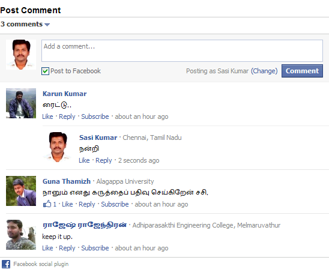

Petani Siaga Pangan Papan Sandang Untuk Kesejahteraan bangsa Indonesia
Selasa, 17 Agustus 1991 oleh M. Takur

Jakarta – Seperti halnya di Indonesia, sektor pertanian memiliki peran strategis dalam pembangunan nasional Malaysia. Tidak hanya untuk ketersediaan pangan, menyediakan bahan baku bagi sektor industri, dan kesempatan kerja, tetapi juga memberikan kontribusi yang signifikan terhadap neraca perdagangan nasional dan pendapatan nasional. Hal tersebut disampaikan oleh Sekretaris Jenderal Kementerian Pertanian Indonesia, Hari Priyono, dalam pembukaan 2ndJoint Committee Meeting Indonesia-Malaysia (JCM) di Bandung, (23/6).
Salah satu bidang yang tetap masih eksis dalam pembangunan daerah di Kota Magelang adalah perikanan. Pembangunan bidang perikanan di Kota Magelang menunjukkan perkembangan dalam beberapa tahun terakhir, diantaranya yang menonjol adalah pembangunan beberapa infrastruktur perikanan di Kota Magelang. Dengan lahan perikanan, dalam hal ini kolam, seluas 6,5 hektar mampu memberikan kontribusi produksi budidaya ikan untuk tahun 2010 lebih dari 80 ton. Selain itu, keberadaan beberapa pengolah ikan di Kota Magelang juga memberikan potensi ikan olahan kurang lebih 400 ton per tahun (Data Bidang Perikanan Kota Magelang 2010).
Jika melihat sumbangan sektor-sektor pembangunan di Kota Magelang terhadap Pendapatan Asli Daerah (PAD), maka sektor perikanan di Kota Magelang terkesan kurang memberikan kontribusi yang nyata dalam beberapa kurun waktu terakhir. Salah satu hal yang bisa dilihat adalah perubahan lembaga yang menangani perikanan di Kota Magelang, dari semula Dinas Perikanan "turun status" menjadi Bidang Perikanan. Hal ini tentunya memberikan pengaruh dalam arah pembangunan perikanan di Kota Magelang, khususnya dalam produksi yang dicapai. Karena itu, diperlukan inovasi program yang mampu mendorong peningkatan produksi perikanan dari semua segmen, mulai dari budidaya hingga pengolahan. Program ini tentunya juga diharapkan mampu memberdayakan pemanfaatan sarana dan prasarana perikanan yang sudah ada di Kota Magelang secara maksimal. Hal tersebut juga sejalan dengan program Kementrian Kelautan dan Perikanan RI untuk lebih banyak mengembangkan kawasan kegiatan perikanan (mina politan).
Letak Kota Magelang yang strategis menjadikan kota ini memiliki mobilitas penduduk yang relatif tinggi. Kota Magelang memiliki peran dalam konstelasi wilayah di Jawa Tengah dan sekitarnya, baik itu sebagai kota tujuan (destinasi) maupun sebagai kota transit. Potensi banyaknya kunjungan dan aktivitas pendatang dari luar Kota Magelang menjadi peluang peningkatan pemasukan bagi kegiatan-kegiatan yang berkaitan dengan orang banyak, diantaranya pariwisata. Selama ini, pariwisata di Kota Magelang lebih banyak mengandalkan obyek wisata yang berbasis wisata massal (mass tourism), diantaranya Taman Kyai Langgeng, kawasan Pecinan atau Museum (Data BPS Kota Magelang, 2010). Melihat hal tersebut, terbuka peluang untuk menciptakan paket wisata yang atraktif dan inovatif untuk lebih melengkapi wisata-wisata yang ada sebelumnya. Wisata Ikan (mina wisata) mencoba hadir untuk melengkapi destinasi pariwisata di Kota Magelang, sekaligus lebih mengenalkan perikanan Kota Magelang kepada khalayak umum.

Artikel Terkait
Empat Tahun Terakhir, Produksi Komoditas Pangan Meningkat
Presiden Berterima Kasih kepada Petani dan Nelayan
Kementan Musnahkan 7.400 Kg Daging Celeng Ilegal